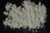

|
|
(For further information on spectroscopy, see:
http://speclab.cr.usgs.gov)
TITLE: Enstatite NMNH128288 Pyroxene DESCRIPT
DOCUMENTATION_FORMAT: MINERAL
SAMPLE_ID: NMNH128288
MINERAL_TYPE: Inosilicate
MINERAL: Enstatite (Pyroxene group)
FORMULA: Mg2Si2O6
FORMULA_HTML: Mg2Si2O6
COLLECTION_LOCALITY: Frank Smith Mine, Barkly West (near), S. Africa
ORIGINAL_DONOR: Smithsonian
CURRENT_SAMPLE_LOCATION: USGS Denver Spectroscopy Laboratory
ULTIMATE_SAMPLE_LOCATION: USGS Denver Spectroscopy Laboratory
SAMPLE_DESCRIPTION:
Forms series with Orthoferrosilite and Hypersthene. Dimorphous with Clinoenstatite.
Under the microscope this hand-picked sample appears to be moderately altered. Higher index of refraction than expected indicates probable higher iron content than pure enstatite.
Salisbury, J. W., Walter, L. W., and Vergo, N., 1987, Mid-Infrared (2.1-25µm) Spectra of Minerals: First Edition, U.S. Geological Survey Open File Report 87-263.
IMAGE_OF_SAMPLE:

END_SAMPLE_DESCRIPTION.
XRD_ANALYSIS:
Results of XRD: Enstatite plus a small amount of kaolinite and mica.
Salisbury, J. W., Walter, L. W., and Vergo, N., 1987, Mid-Infrared (2.1-25µm) Spectra of Minerals: First Edition, U.S. Geological Survey Open File Report 87-263.
END_XRD_ANALYSIS.
COMPOSITIONAL_ANALYSIS_TYPE: EM(WDS) # XRF, EM(WDS), ICP(Trace), WChem
| COMPOSITION KEYWORD |
Oxide ASCII |
Amount | Weight Percent, % |
Oxide html |
|---|---|---|---|---|
| COMPOSITION: | SiO2 | 56.70 | wt% | SiO2 |
| COMPOSITION: | TiO2 | 0.01 | wt% | TiO2 |
| COMPOSITION: | Al2O3 | 1.69 | wt% | Al2O3 |
| COMPOSITION: | FeO | 4.97 | wt% | FeO |
| COMPOSITION: | MnO | 0.15 | wt% | Mn0 |
| COMPOSITION: | MgO | 35.25 | wt% | MgO |
| COMPOSITION: | CaO | 0.85 | wt% | CaO |
| COMPOSITION: | Na2O | 0.02 | wt% | Na2O |
| COMPOSITION: | K2O | 0.02 | wt% | K2O |
| COMPOSITION: | Total | 99.66 | wt% | |
| COMPOSITION: | O=Cl,F,S | wt% | ||
| COMPOSITION: | New Total | wt% |
COMPOSITION_TRACE: None
COMPOSITION_DISCUSSION:
"Microprobe analysis showed some heterogeneity. Six of the seven analyses were of enstatite bearing approximately 13% ferrosilite molecule. One analysis had slightly over 2% CaO, with a concomitant decrease in MgO, where the other analyses have 0.5% CaO. An average of the seven analyses is reported."
Salisbury, J. W., Walter, L. W., and Vergo, N., 1987, Mid-Infrared (2.1-25µm) Spectra of Minerals: First Edition, U.S. Geological Survey Open File Report 87-263.
END_COMPOSITION_DISCUSSION.
MICROSCOPIC_EXAMINATION:
Mode:
85 vol% enstatite
15 vol% mica
avg. grain size = 25 µm (other estimate gave 47µm M. Cowoski)
Straight extinction, exsolution lamellae, low order gray, biaxial, prismatic cleavage, all consistent with orthopyroxene. G. Swayze.
END_MICROSCOPIC_EXAMINATION.
SPECTROSCOPIC_DISCUSSION:
END_SPECTROSCOPIC_DISCUSSION.
SPECTRAL_PURITY: 1c2c3c4c # 1= 0.2-3, 2= 1.5-6, 3= 6-25, 4= 20-150 microns
| LIB_SPECTRA_HED: | where | Wave Range | Av_Rs_Pwr | Comment |
|---|---|---|---|---|
| LIB_SPECTRA: | splib04a r 1541 | 0.2-3.0µm | 200 | g.s.= 25 µm |
| LIB_SPECTRA: | splib05a r 2561 | 0.2-3.0µm | 200 | g.s.= |
| LIB_SPECTRA: | splib06a r 7435 | g.s.= | ||
| LIB_SPECTRA: | splib06a r 7447 | g.s.= |
{kind=link}